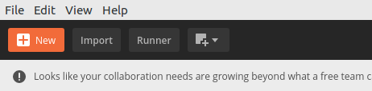
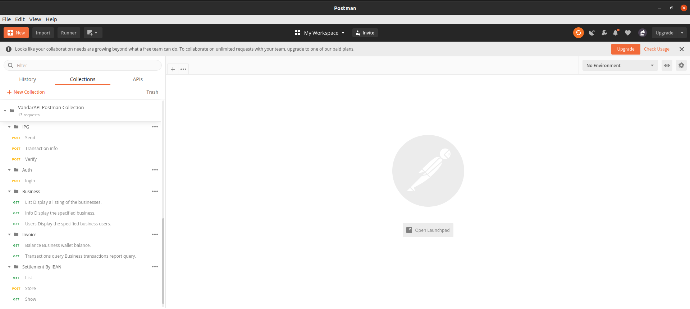
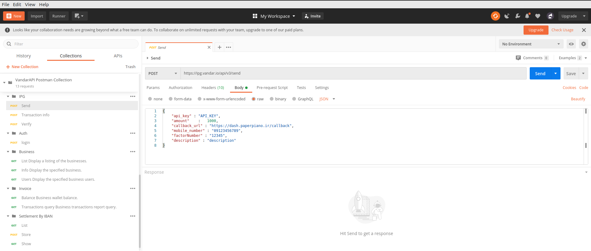
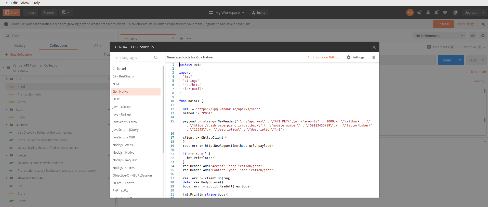

مفاهیم اولیه
به بخش مستندات فنی وندار خوش آمدید. برای استفاده از مستندات فنی درگاه و درگاه دومرحلهای لازم است از API key ارائه شده در صفحهی درگاه پرداخت میز کار استفاده کنید. برای استفاده از سایر APIها باید با فراخوانی API احراز هویت توکن مورد نظر را دریافت کنید.
در استفاده از مستندات زیر به سطح دسترسی کاربران کسبوکار توجه کنید، ممکن است بعضی از APIها برای بعضی از کاربران قابل دسترسی نباشد.وبسرویسهای وندار به صورت REST در اختیار کاربران و همکاران تجاری ما قرار گرفته است.
Postman
پست من یک ابزار برای تست کردن apiها است. وندار هم برای اینکه شما بتونید از امکانات این ابزار برای تست و توسعه سرویس ها استفاده کنید. مجموعه سرویس هاش رو در قالب یک کالکشن پست من آماده کرده.
مرحله اول: از این لینک آخرین نسخه postman رو دانلود و نصب کنید.
مرحله دوم: کالکشن وندار رو import کنید.  در انتها کالکشن سرویسهای وندار را اینگونه باید مشاهده کنید. 
مرحله سوم: هر کدام از سرویس ها را میتوانید با تغییر دادن مقادیر تست کنید. 
مرحله چهارم: نمونه کد هر زبان برنامه نویسی که میخواهید را با استفاده از ابزار code تولید کنید. 
شروع کنید
اگر قصد پیاده سازی درگاه پرداخت وندار را دارید مستندات درگاه پرداخت را بدون هیچ گونه پیشنیازی شروع کنید.
اما اگر قصد پیاده سازی سرویس های دیگر وندار را دارید پیشنیاز همه این سرویس ها پیاده سازی مستندات احراز هویت است.